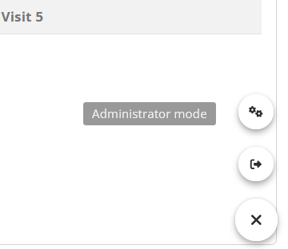

ClinSight can be customized using two different files. Study-specific
configurations are stored in a metadata file that can be created with a
metadata Excel template, while general configuration is stored in a
configuration .yml file. The latter contains settings more
related to deployment, and will be discussed here.
General configuration
The general ClinSight configuration is set using a
golem-config.yml file. This file mostly contains settings
that do not frequently change between studies within an organization,
such as organization-specific deployment options. A configuration file
(the default at the time this vignette was rendered) is shown below and
will be discussed in detail.
default:
golem_name: clinsight
golem_version: 0.2.0.9001
app_prod: no
user_identification: test_user
study_data: !expr clinsight::clinsightful_data
meta_data: !expr clinsight::metadata
user_db: user_db.sqlite
user_roles:
Administrator: admin
Medical Monitor: medical_monitor
Data Manager: data_manager
allow_to_review: [admin, medical_monitor]
allow_listing_download: TRUE
allow_query_inputs: TRUE
dev:
golem_wd: !expr golem::pkg_path()
test:
study_data: study_data.rds
meta_data: metadata.rds
shinymanager:
app_prod: yes
user_identification: shinymanager
study_data: study_data.rds
meta_data: metadata.rds
credentials_db: credentials_db.sqlite
shinyproxy:
app_prod: yes
user_identification: http_headers
study_data: study_data/study_data.rds
meta_data: study_data/metadata.rds
user_db: study_data/user_db.sqlite
posit_connect:
app_prod: yes
user_identification: shiny_session
study_data: study_data.rds
meta_data: metadata.rds
user_db: user_db.sqlite
allow_to_review: [admin, medical_monitor, data_manager]Config.yml arguments
The following are the most important arguments in the
golem-config.yml file for clinsight:
-
app_prod: Controls a few production-related settings, such as whether a warning is shown if the study data is older than one day (and thus possibly outdated), or whether the internal user database is always synchronized when starting ClinSight. It is recommended to set this toTRUEwhen the application is run in production. -
user_identification: The way a user can be identified. For testing purposes, it can be set totest_user. In production, this can be set to eithershinymanager(for Shinymanager deployments),http_headers(for ShinyProxy deployments), orshiny_session(for Posit Connect deployments). -
study_data: In the default settings, this path will directly return the internal package data for testing purposes. In production, this argument should contain the file path to the study’s raw data, prepared in an.rdsfile. -
meta_data: In the default settings, this path will return example metadata for testing purposes. In production, this argument should contain the file path to the metadata, prepared as an.rdsfile. -
user_db: Path to the user database SQLite file. If it doesn’t already exist, a new database will be automatically generated in this file location. -
credentials_db: Path to the credentials database (a .sqlite file). Only applicable in theshinymanagerconfiguration. -
user_roles: List with roles (in this format:Role Name: role_id) that are available in the application. -
allow_to_review: List of role names (specified above) which are allowed to review data in the application. -
allow_listing_download: Logical,TRUEif users are permitted to download listings from the ClinSight application directly to Excel for sharing (or other uses). -
allow_query_inputs: Logical, `TRUE` to permit users to submit and track queries within the application’s database.
Setting configurations
A configuration can be set by changing the GOLEM_CONFIG_ACTIVE
environment variable before calling run_app(), for example
like this:
Sys.setenv("GOLEM_CONFIG_ACTIVE" = "shinymanager")
There are multiple configurations pre-built in ClinSight’s
golem-config.yml, of which the most important ones are:
default, test, shinymanager,
shinyproxy, and posit_connect. The first two
are meant for testing purposes, while the other settings are more suited
for use in production.
With the standard (‘default’) configuration, the package’s internal
“example data” with matching metadata will be used to run
ClinSight. These are the settings used when running
clinsight::run_app() after a fresh installation. A user
database named user_db.sqlite will be created in the
current working directory if it does not yet exist. This database stores
user data such as which records are reviewed, and which queries are
raised (if any).
The default settings are useful for demonstration purposes, but
different settings are required when using ClinSight with
actual clinical trial data. Currently, there are three ways to run
and/or deploy ClinSight, which are mentioned below.
Run application
For testing ClinSight, the function test_clinsight() was
introduced previously. This function
is a thin wrapper around run_app() that ensures the
required databases are created and destroyed with app launch & exit.
This makes it easier to prototype the application, and tweak the
data/metadata for use with ClinSight.
For deploying ClinSight, however, the function
clinsight::run_app() should be used directly. This function
creates databases in the working directory that will save user actions
such as review status of study data. Depending on the configuration
settings chosen, a credentials database will be created (for deployments
using shinymanager) In addition, a path to the study data
and metadata (both .rds files) can be provided in the
configuration file.
Shinymanager
One way of deployment is using shinymanager.
The shinymanager package provides a user authentication and
user management layer and its use is preconfigured for
clinsight. It provides a fast way of deployment,
particularly suited for quick local deployment. User and password
management information is stored within a local encrypted
credentials.sqlite database. This provides a brief overview
of how shinymanager can be used with ClinSight. For more details, please
visit the shinymanager
website.
To use shinymanager with ClinSight, first make sure that
the shinymanager package is installed, then set the
configuration accordingly with
Sys.setenv("GOLEM_CONFIG_ACTIVE" = "shinymanager"). This
configuration expects the files study_data.rds and
metadata.rds to be present in the current working
directory. Finally, a credentials password needs to be provided in the
run_app() command; this is used to encrypt/decrypt the
database.
# Not run:
# Example setup for deployment. Warning: this will create multiple files in the current working directory.
if (interactive()){
saveRDS(clinsightful_data, "study_data.rds")
saveRDS(metadata, "metadata.rds")
Sys.setenv("GOLEM_CONFIG_ACTIVE" = "shinymanager")
run_app(credentials_pwd = "TEMP_PASSWORD")
}This code will first save the internal package data in the working
directory, and then create a user_db.sqlite file and a
credentials.sqlite file in the same directory.
For testing purposes, the shinymanager configuration can
be tested out using test_clinsight() and with internal
package data:
if (interactive()){
test_clinsight(clinsight_config = "shinymanager")
}Note that the credentials.sqlite database is protected
for unauthorized access with the password provided in the argument
credentials_pwd (currently set to “TEMP_PASSWORD”). If the
code above is run, a login page will be shown.

For the first login, the credentials.sqlite database is
newly created. In this case, the login name will be ‘admin’ and the
password 1234. After first login, a password change and a
login with the new password is required before the ClinSight app can be
accessed.

After successful login, new users can be added by going to the Administrator panel using the widget in the bottom right of the screen:

When creating a new user, make sure that the User field does not contain spaces and that the expiration date and the sites that the user needs to access are entered/selected correctly.

More details can be found in the documentation of the shinymanager package.
Shinyproxy
Another way of deployment can be with the use of shinyproxy. ShinyProxy is
fully open source software and provides multiple options for deploying
shiny applications, with built-in support for the latest authentication
and authorization technologies such as OpenID
Connect. It serves shiny (or other data science) applications in
Docker containers. This provides multiple advantages, among which the
possibility to run applications fully isolated, and to deploy multiple
versions of an application. This guide provides some brief hints to get
started with a ShinyProxy deployment.
First download and install ShinyProxy according to the
instructions on the ShinyProxy
website. The second step is to store ClinSight in a Docker image. A
good place to start are the images from the Rocker Project, which can be
relatively quick to setup. Alternatively, smaller Docker images with
less dependencies (and thus possibly less security vulnerabilities) can
be created with Alpine Linux
images. These images will probably take longer to build, since
Rstudio Package Manager provides no binaries for Alpine Linux at the
time of writing, meaning that all R packages need to be installed from
source.
Within the Docker file, install ClinSight. To reduce the
R package dependencies and the size of the Docker image, the
renv profile minimal can be used. This profile
contains the minimal number of required packages in order to run the
application.
After installing clinsight in the Docker image, create a
folder named study_data in the current user’s home
directory. Then set the configuration to shinyproxy and
create a CMD line similar to below:
ENV GOLEM_CONFIG_ACTIVE="shinyproxy"
CMD R -e "options('shiny.port'=3838, shiny.host='0.0.0.0', golem.app.prod = TRUE); clinsight::run_app()"Next, ensure that the ShinyProxy configuration .yml file
is setup correctly. Below is an example to get started. Note that these
settings assume that openID Connect is used for
authentication. Configuring this properly is outside of the scope of
this guide; see the ShinyProxy
documentation for details on this.
proxy:
title: "ClinSight Portal"
port: 8080
authentication: openid
container-wait-time: 60000
openid:
auth-url: ...
jwks-url: ...
token-url: ...
client-id: ...
client-secret: ...
username-attribute: email
roles-claim: roles
docker:
internal-networking: true
admin-groups: admin
specs:
- id: clinsight
container-image: clinsight_image:latest
container-volumes: ["LOCAL_DATA_FOLDER/study_data:/home/clinsight_user/study_data"]
container-network: internal_network
http-headers:
X_SP_USERNAME: "#{T(java.util.Base64).getEncoder().encodeToString(oidcUser.getFullName().getBytes())}"A few more important notes:
A data volume needs to be mounted to the docker container in order for the application to run correctly. The Docker container user also needs writing access to this folder.
User names are passed through using HTTP headers. Since HTTP headers cannot handle all UTF-8 characters, the user names need to be base64 encoded as shown in the example
.ymlfile.
Posit Connect
Lastly, ClinSight provides a configuration to deploy applications with Posit Connect.
To use it, set the active configuration to
posit_connect:Sys.setenv("GOLEM_CONFIG_ACTIVE" = "posit_connect").
This configuration utilizes Shiny session objects to manage
user credentials. The user_role element of
config.yml will correspond to session$groups
so that users can be assigned review status by group assignment within
Connect. The session object session$user will
be utilized to log user interactions in the application as well.
For ease of deployment, a manifest.json file has been
included in the root directory. This manifest includes packages not
included in the minimal profile needed for deployment using
the app.R file.
Customizing configuration
If the profiles above are insufficient, you can also provide your own configuration file with fully customized settings with the steps described below.
To do so, first create a configuration template. The function
create_clinsight_config() can be used to create a copy of
the current clinsight configuration file in the current
working directory. To use this configuration file with
clinsight, the environment variable named “CONFIG_PATH”
needs to be set by using a command similar to the following:
Sys.setenv("CONFIG_PATH" = "PATH_TO_CONFIG/clinsight_config.yml"),
where PATH_TO_CONFIG is the path to the folder in which the
configuration file is located.